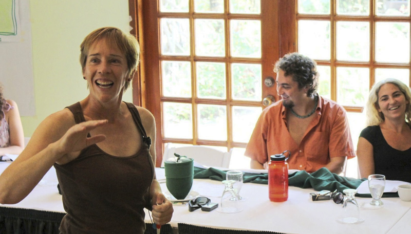
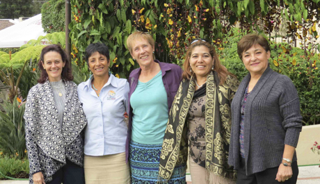

Facilitation and Planning

All groups need to plan for programmatic outcomes, multi-year strategic initiatives, and fiscal health. I LOVE facilitating group processes for both long-term visions and actionable next steps. Aligning Visions works with staff and board members to set up team processes to get needed inputs, set clear goals, design the operational work plans to reach those goals, and establish clear measures for accountability.
Based on your needs, the approach can include virtual meetings, regular weekly phone check-ins, workshops, surveys, interviews, retreats, and/or field work. The ultimate result is YOUR plan with strong buy-in and commitment from energized staff, board members and partners. I am also a coach with the Open Standards for the Practice of Conservation, helping organizations carefully assess conservation targets, key threats, and high-impact strategies
It has been a true pleasure to work with you, Paquita. I admire the depth and nuance of understanding of Nature and Culture International that you achieved in a short time. You know a lot about the Latin American conservation field and guided and challenged us to produce a smart, impactful plan that fits who we are. I couldn't be more pleased with the final result.
Matt Clark, President and CEO, Nature and Culture International
 I have had the pleasure of working with Paquita on a number of occasions and from the perspective of different organizations. All of her work products – from the early planning through the final documents – have been high quality. She is a wonderful facilitator, guiding processes and discussions to concrete agreements wherein everyone feels comfortable. I think one of her best qualities is that she can distill participant inputs into useful products that allow organizations to move forward, whether for a strategic plan, a work plan or in managing the delicate balance needed for governance decisions.
María José González, Executive Director, MAR Fund
Dear Paquita, It is with enormous excitement that I receive the final strategic plan for WWF Mexico. You know what this means for our organization and all of us that are so invested in transforming it in the right direction. A new start down a new exciting road, with a new view of each other, with a more united team and with the right level of ambition that the challenge requires. And, needless to say, you have been key in helping us reach this point. It has been a pleasure working with you and counting you among us as a WWF Mexico member! As we move forward have no doubt we will be knocking on your door!
Jorge Rickards G., General Director, WWF México
When we needed to refocus the Mesoamerican Reef Leadership Program, Paquita Bath was contracted for her facilitation skills, in-depth knowledge of conservation themes, and comfort using the results chain methodology. The result of our retreat was a concise work plan with a clear well-developed set of strategies, benchmarks, and measurable impacts. Paquita is very professional, agreeable, and high energy. She brought great clarity of thought and patience to the facilitation process. I’m delighted to have worked with her and happy to have a new friend.
María Eugenia Arreola, Mesoamerican Reef Leadership Program, Fondo Mexicano para la Conservación de la Naturaleza
Whether it is a long-term strategic plan or a focused annual work plan, Aligning Visions provides options for how to approach the planning process so that you can choose what tools, or combination of tools, will work best for your stakeholders and organization.
Scroll to Top